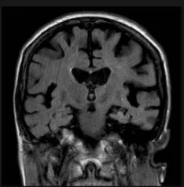
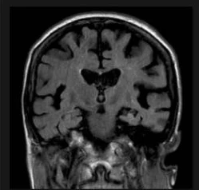
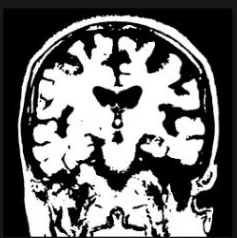
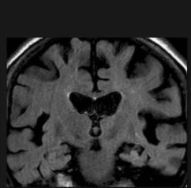
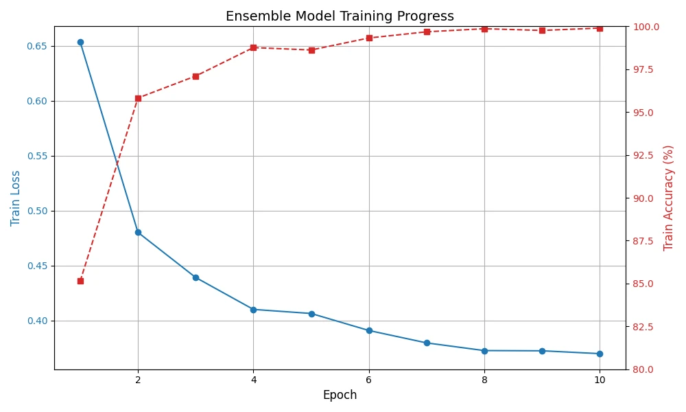

ICEANS 2025 · 7th International Conference on Engineering and Applied Natural Sciences · Konya
Summary
Three pretrained CNNs look at the same MRI scan; a small MLP meta-learner learns how to combine their outputs into one of four classes: glioma, meningioma, pituitary tumor or no tumor.
Median blur, Otsu thresholding and cropping to the largest region focus the networks on the head.
A learned combiner instead of a fixed vote: it can trust each base model where it is strong.
Automatic mixed precision keeps training practical on a single RTX 3050 GPU.
I · Introduction
Arises from glial cells inside the brain tissue.
Grows from the meninges, the membranes around the brain.
Forms in the pituitary gland at the skull base.
I · Related Work · Interactive
Results as reported by each study on its own data; not directly comparable. Click a column header to sort.
| Study | Ensemble | Data | Reported result | Ref. |
|---|---|---|---|---|
| Jader et al. | VGG-16, ResNet-50, AlexNet | 4 classes | 99.16% accuracy | 1 |
| Tandel et al. | 5 CNNs, majority vote | T1W, T2W, FLAIR glioma grading | up to 98.88% accuracy | 2 |
| Ghafourian et al. | Naive Bayes, SVM, KNN after spider-optimized segmentation | BRATS 2014, BTD20 | 98.61% / 99.13% accuracy | 3 |
| Anand et al. | VGG19 + CNN, weighted average | TCGA lower-grade glioma | reduced overfitting | 4 |
| Çetin-Kaya and Kaya | 5 CNNs weighted by particle swarm optimization | 3 datasets | up to 99.92% accuracy | 5 |
| Vaiyapuri et al. | EfficientNet, DenseNet, MobileNet + Gabor filter | BRATS 2015 | improved classification | 6 |
| Asif et al. | DenseNet201, ResNet152V2, InceptionResNetV2 (stacked) | Figshare | 98.69% accuracy | 7 |
| Hassan et al. | EL-APMC | BRATS 2015 glioma grades | 88.73% accuracy, 93.12% F1 | 8 |
| Kang et al. | VGG16, ResNet50, InceptionV3 features + SVM | large MRI sets | improved performance | 9 |
| Zahoor et al. | boosted deep features + BRAIN-RENet | Kaggle, Figshare | 99.56% detection, 99.20% classification | 10 |
| This study | EfficientNet-B0, DenseNet201, ResNet50 + MLP meta-learner | BRISC | weighted F1 0.998 | – |
II.A · Dataset
Contrast-enhanced T1-weighted MRI: 5,000 for training, 1,000 for testing.
Annotated by certified radiologists and physicians into four classes.
Axial, sagittal and coronal views with balanced annotations, to improve training and generalization.
| Test class | Scans |
|---|---|
| Glioma | 254 |
| Meningioma | 306 |
| No tumor | 140 |
| Pituitary | 300 |
| Total | 1,000 |
Row sums of the confusion matrix in Fig. 2.
BRISC fills gaps of BraTS and Figshare: consistent data, one modality (no T2-weighted scans), labels for both segmentation and classification.
II.B · Fig. 1 · Interactive




Then: bounding box of the largest contour, resize, back to RGB, normalization to mean 0.5 and standard deviation 0.5 per channel.
II.B · Preprocessing · Interactive
Runs in your browser on the Fig. 1 images. Otsu picks the threshold that maximizes the variance between the dark and bright pixel groups.
II.C · Model Architecture
Dropout 0.4 → Linear to 512 → ReLU → BatchNorm → Dropout 0.2 → Linear to 4 classes.
A fixed vote treats all models alike. The MLP learns patterns in their joint outputs, e.g. which model to trust for which class.
DenseNet201 reuses features from all earlier layers.
ResNet50 eases training of deep networks; EfficientNet-B0 scales depth, width and resolution together.
II.D · Training
| Setting | Value |
|---|---|
| Hardware | NVIDIA GeForce RTX 3050, CUDA 11.8 |
| Framework | PyTorch with automatic mixed precision |
| Batch size | 8, shuffled |
| Loss | cross-entropy, label smoothing 0.1 |
| Optimizer | AdamW, learning rate 1e-4 |
| Schedule | cosine annealing |
| Epochs | 10 |
autocast runs the forward pass in half precision where safe; GradScaler scales the loss so small gradients do not underflow.
The true class gets a target of 0.925 instead of 1.0 (0.1 spread over 4 classes), which discourages over-confident outputs.
III.B · Fig. 3

III.B · Table 1 · Interactive
Weighted F1: DenseNet201 0.987 · ResNet50 0.988 · EfficientNet-B0 0.991 · ensemble 0.998. The axis starts at 0.97; hover a row for exact values.
III.B · Fig. 2 · Interactive
Hover or tap a cell. Rows are true labels, columns predictions.
IV · Discussion
Each CNN makes different mistakes; the meta-learner combines their strengths, e.g. the glioma precision of DenseNet201 and ResNet50 and EfficientNet-B0's no-tumor score.
Otsu thresholding and ROI cropping remove empty background, so more pixels show the brain.
BRISC's diverse, consistent, expertly annotated scans support robust training.
Mixed precision lets three CNNs train on a single RTX 3050 GPU, relevant for resource-limited clinics.
V · Conclusion
V · Conclusion
References
See the full paper for the complete reference list. Figures on these slides are from the paper.